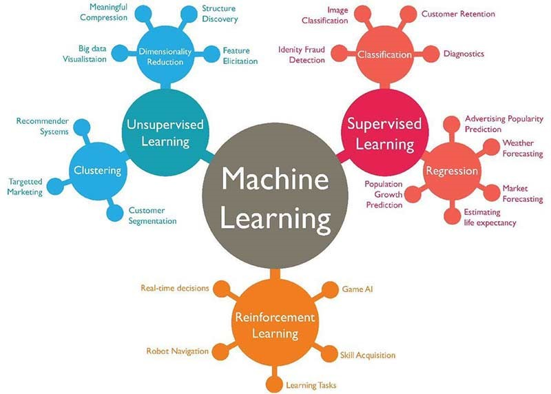
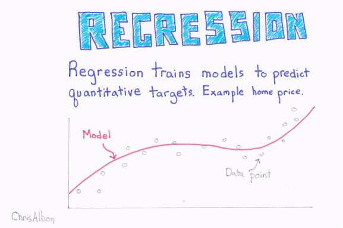
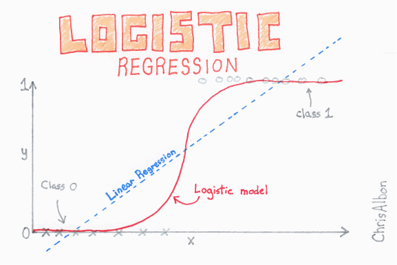
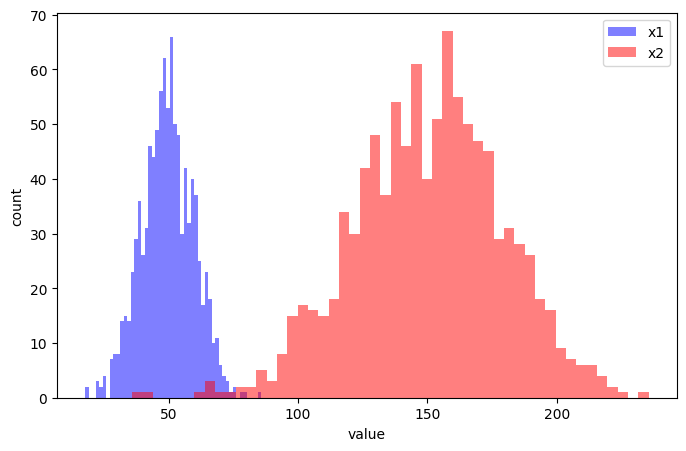
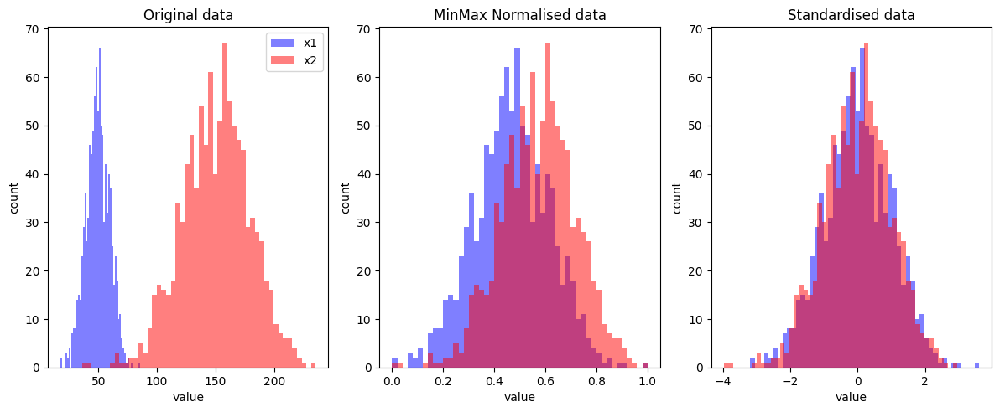

import matplotlib.pyplot as plt
import numpy as np1 An Introduction to Classification with Machine Learning

(Image from https://technovert.com/introduction-to-machine-learning/)
2 An introduction to classification with machine learning
In classification tasks we seek to classify a ‘case’ into one or more classes, given one or more input features. This may be extended to enquiring about probability of classification. Examples of classification include:
- What diagnosis should this patient be given?
- What is the probability that an emergency department will breach four-hour waiting in the next two hours?
- What treatment should a patient be given?
- What is the probability that a patient will be re-admitted?
Reflection: 1. Can you think of three occasions where people make classifications? 1. Can you think of an example where it might be useful to provide automated classification?
2.1 Regression and logistic regression
With ordinary regression we are trying to predict a value given one or more input features.

(Flashcard images from machinelearningflashcards.com)
With logistic regression we are trying to the predict the probability, given one or more inputs, that an example belongs to a particular class (e.g. pass vs fail in an exam). Our training data has the actual class (which we turn into 0 or 1), but the model returns a probability of a new example being in either class 0 or 1. The logistic regression fit limits the range of output to between 0 and 1 (whereas a linear regression could predict outside of this range).

\[P = \dfrac{e^{a+bX}}{1+e^{a+bX}}\]

2.2 Import libraries
2.3 Data scaling
It is usual to scale input features in machine learning, so that all features are on a similar scale. Consider these two features (we will create artifical data).
# Create two sets of data with different means and standard deviations
np.random.seed(123) # The random seed simply "fixes" the random number generation to make it reproducible
x1 = np.random.normal(50,10,size=1000)
x2 = np.random.normal(150,30,size=1000)# Set up single plot
fig, ax = plt.subplots(figsize=(8,5))
# Add histogram of x1
ax.hist(x1, bins=50, alpha=0.5, color='b', label='x1')
# Add histogram of x2
ax.hist(x2, bins=50, alpha=0.5, color='r', label='x2')
# Add labels
ax.set_xlabel('value')
ax.set_ylabel('count')
# Add legend
ax.legend()
# Finalise and show plot
plt.show()
2.3.1 MinMax Normalisation
With MinMax normalisation we scale all values between 0 and 1.
\[z = \frac{x-min(x)}{max(x) - min(x)}\]
A less common alternative is to scale between -1 and 1.
\[z = -1 + 2\frac{x-min(x)}{max(x) - min(x)}\]
Here we will use 0-1 normalisation. Here we do this manually, but for real data we can use a MinMaxScaler (as seen in the lecture) :
x1_norm = (x1 - x1.min()) / (x1.max() - x1.min())
x2_norm = (x2 - x2.min()) / (x2.max() - x2.min())2.3.2 Standardisation
With standardisation we scale data such that all features have a mean of 0 and standard deviation of 1. To do this we simply subtract by the mean and divide by the standard deviation.
\[z = \frac{x-\mu}{\sigma}\]
Again, here we do this manually, but for real data we’d typically use a StandardScaler, as seen in the lecture :
x1_std = (x1 - x1.mean()) / x1.std()
x2_std = (x2 - x2.mean()) / x2.std()2.3.3 Plotting the transformations
# Set up three subplots (12 x 5 inch plot)
fig, axs = plt.subplots(1, 3, figsize=(12,5))
# Plot original data in axs[0]
axs[0].hist(x1, bins=50, alpha=0.5, color='b', label='x1')
axs[0].hist(x2, bins=50, alpha=0.5, color='r', label='x2')
axs[0].set_xlabel('value')
axs[0].set_ylabel('count')
axs[0].legend()
axs[0].set_title('Original data')
# Plot normalised data in axs[1]
axs[1].hist(x1_norm, bins=50, alpha=0.5, color='b', label='x1 norm')
axs[1].hist(x2_norm, bins=50, alpha=0.5, color='r', label='x2 norm')
axs[1].set_xlabel('value')
axs[1].set_ylabel('count')
axs[1].set_title('MinMax Normalised data')
# Plot standardised data in axs[2]
axs[2].hist(x1_std, bins=50, alpha=0.5, color='b', label='x1 norm')
axs[2].hist(x2_std, bins=50, alpha=0.5, color='r', label='x2 norm')
axs[2].set_xlabel('value')
axs[2].set_ylabel('count')
axs[2].set_title('Standardised data')
# Adjust padding between subplots and show figure
fig.tight_layout(pad=1.0)
plt.show()
2.3.4 Notes on scaling
Most commonly, with classification: * Decision trees and random forests require no scaling * Linear regression and support vector machines use standardised input data * Neural networks use MinMax normalised input data
Later we will see that when we split data into training and test sets we will scale based on min/max or mean/std of the training set data only. We will also use the scaling methods provided by the SciKit-Learn library rather than using our own.